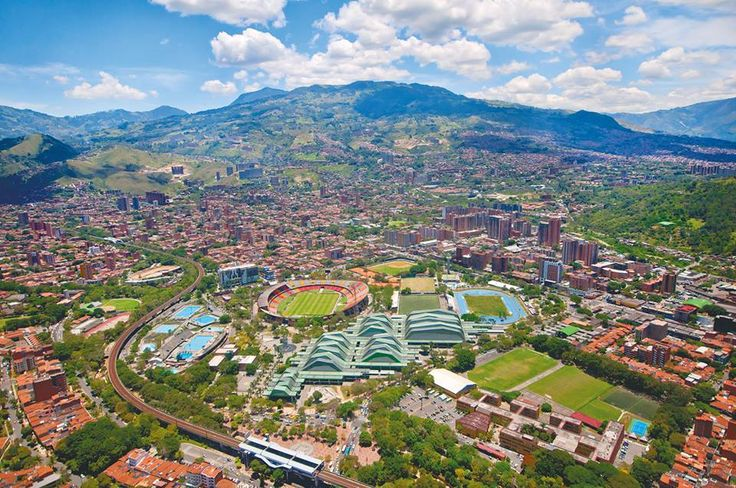
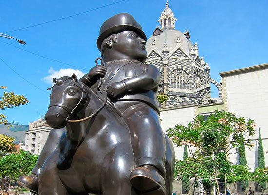
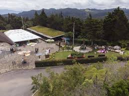
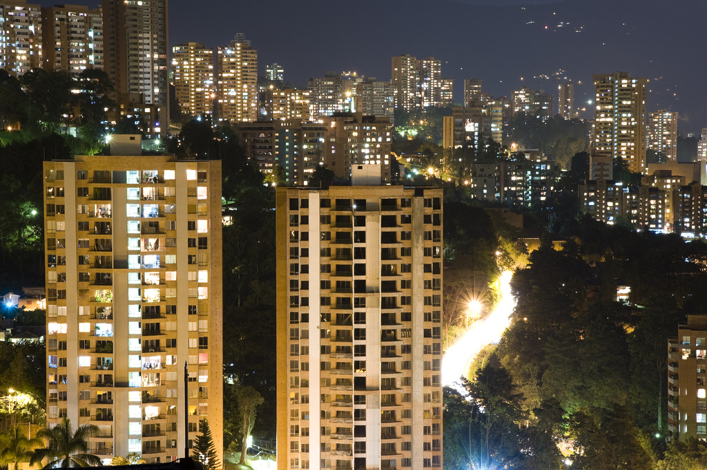

Top Places You Cannot Miss
From modern urban artwork to breathtaking natural retreats, here are the absolute highlights of the region.

Comuna 13
A neighborhood completely transformed through community art, music, and street dancing. Famous for its outdoor escalators and incredible legal graffiti walls that tell stories of hope and history.

Plaza Botero
Located in the heart of downtown, this open-air museum features 23 massive bronze sculptures donated by the world-renowned local artist Fernando Botero.

Parque Arví & Metrocable
Take a scenic cable car ride high above the city directly into a massive nature reserve. It is ideal for hiking, spotting native birds, and enjoying local farmers' markets.

El Poblado & Laureles
The core neighborhoods for foodies and nightlife. El Poblado offers bustling café cultures and trendy restaurants, while Laureles provides a lush, tree-lined, more traditional local atmosphere.